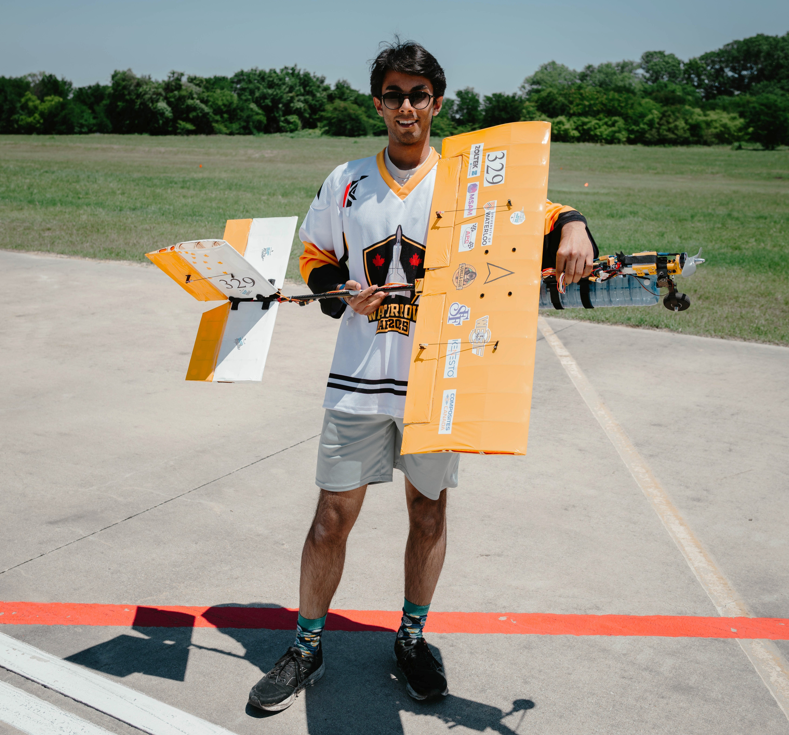
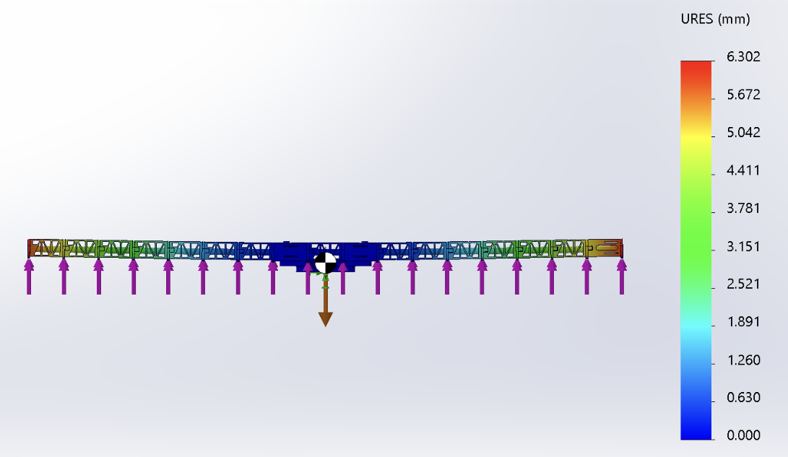
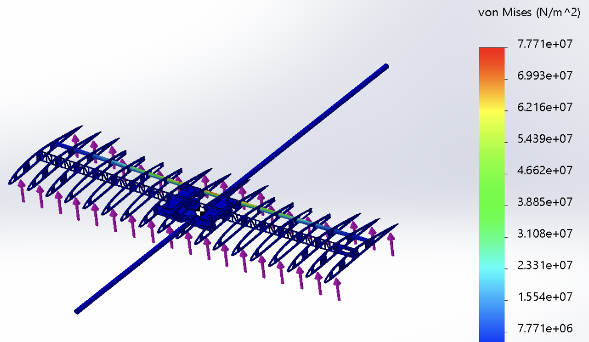
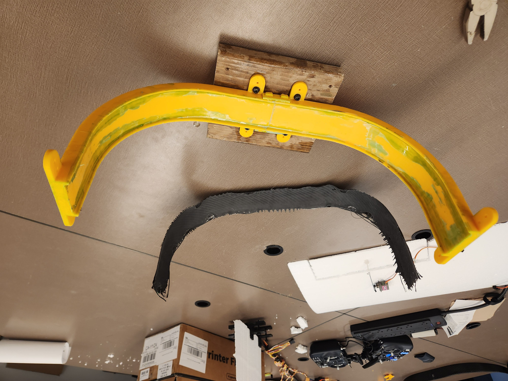
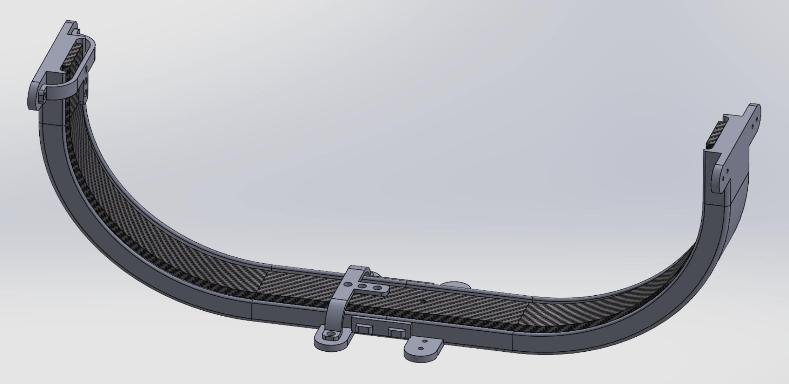
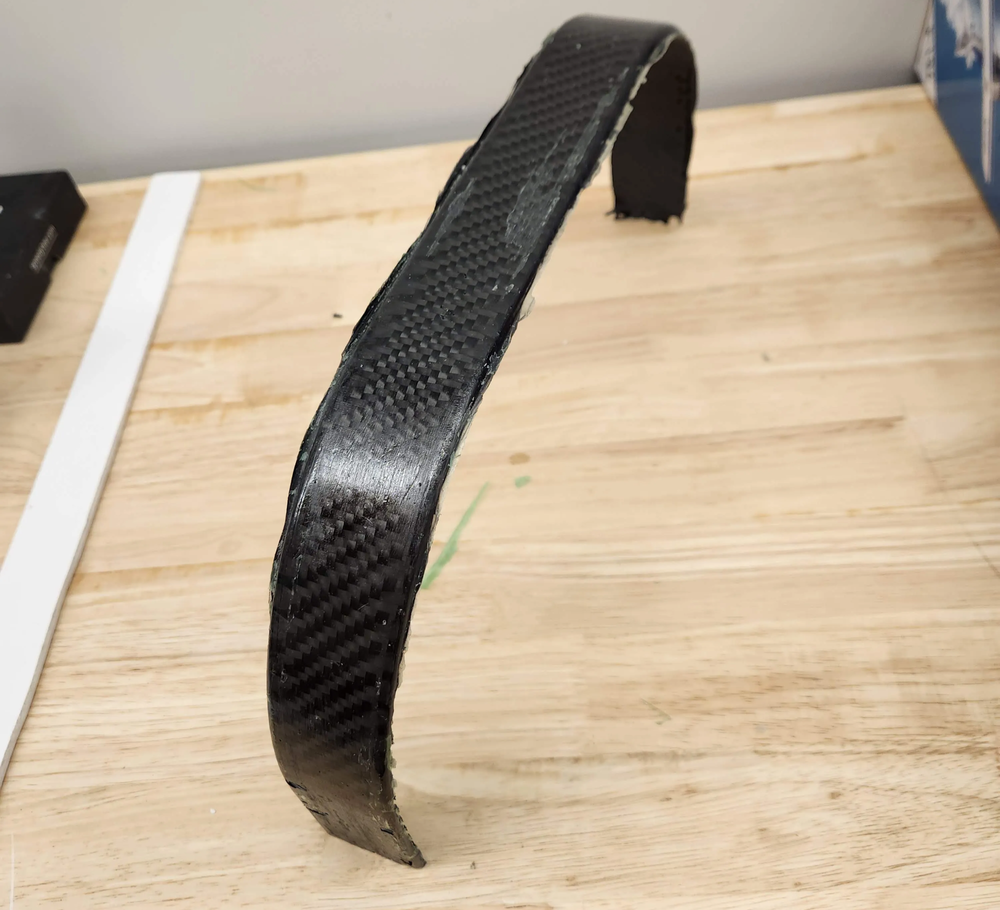
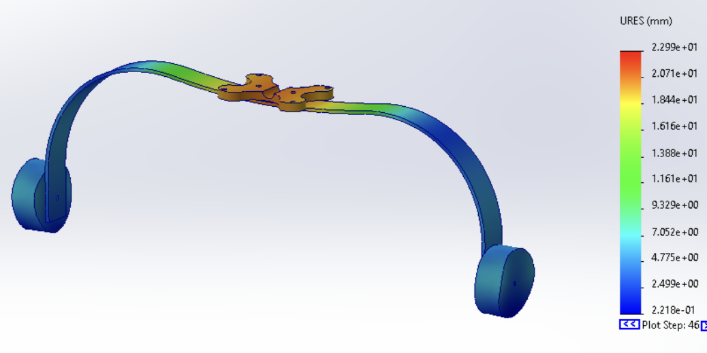
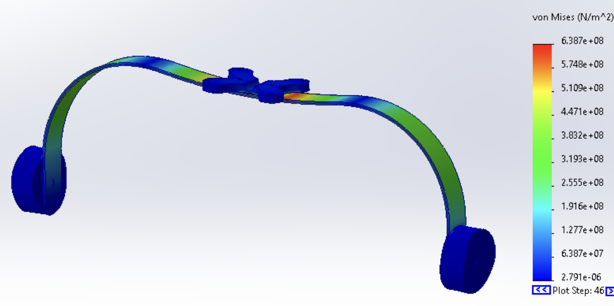
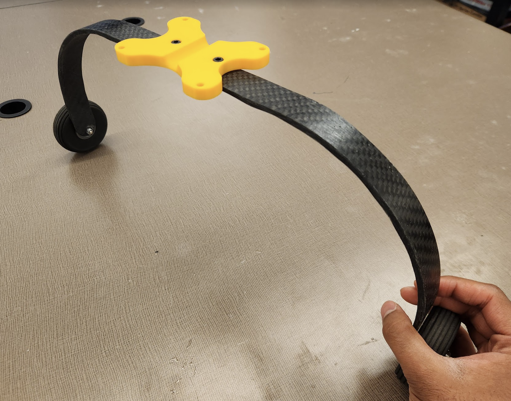
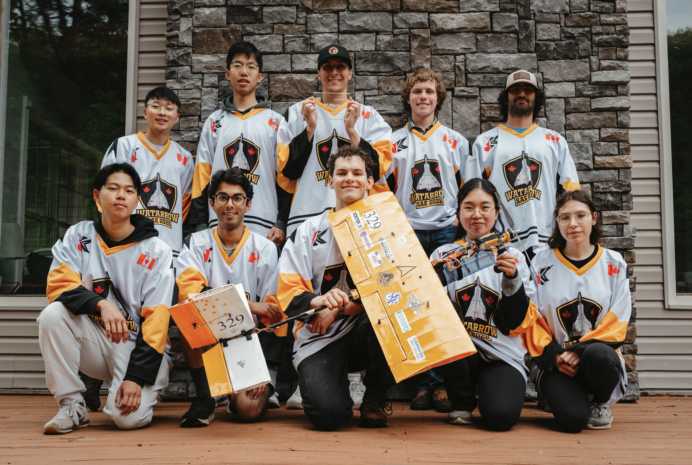

SAE 2025 Conventional Aircraft

Project Overview
This was WatArrow’s Micro Class competition aircraft for SAE Aero Design East 2025. My main contributions were:
- Wing structural analysis
- Landing gear development
Wing Structural Analysis
I was responsible for conducting structural analysis of the wing using hand calculations, SolidWorks Flow Simulation, and FEA. I used the flow simulation to determine the following conditions for maximum lift (and thus maximum stress):
- Angle of attack of 4° (corresponding to a coefficient of lift of 0.45)
- Speed of 17 m/s
Solving the lift equation for these conditions provided a maximum lift of 18N, which is just above the fully-loaded aircraft weight of 16N:
Since the wing had multiple interfaces between balsa wood ribs, a carbon fiber tube, and 3D printed mounts, I used FEA to model the deflection at the tips and validated the results with a simplified hand calculation focusing only on the carbon fiber tube. It is important to note that all the analysis made major assumptions about the elastic modulus of balsa wood, carbon fiber, and 3D prints, since the strength of these materials can vary significantly based on grain direction, fabrication technique, and other conditions. I used a safety factor 2.0 for both the FEA and hand calculations, so the applied forces were a lift force of 36N and weight of 32N.
For FEA in SolidWorks, I applied the lift force as a distributed load on the underside of each rib and the weight as a point load at the aircraft's CG. Applying loads in these locations allowed for simplification of the simulation CAD, which made the simulations much faster to run. Simulation results of an initial design of the wing revealed that it would deflect by 20mm at the tips, so I suggested lengthening the internal carbon fiber spar to enhance the rigidity of the outermost balsa ribs. I validated this with another simulation, which showed a deflection of 2mm, or a reduction of 90%.


As a sanity check, I did a conservative hand calculation assuming that the wing was a 0.9m long carbon fiber tube with an elastic modulus of 170 GPa (the same value used for FEA). The obtained deflection of 3.23mm was reasonable and comparable to the FEA results.
Landing Gear Development
I worked on this project with Veronika Markovich. The main objectives were:
- Reduce weight
- Increase strength (to survive crash landings)
Typically, these would be conflicting objectives, but we resolved this by selecting carbon fiber as the material. I spent lots of time experimenting with different fabrication techniques and resin-fiber combinations.
Fabrication Techniques
Initially, we considered fabricating the landing gear with a vacuum infusion, as this is what I had experience with from my previous involvement with the Formula Electric design team. However, this approach was quickly ruled out due to the need for costly vacuum pumps and support equipment. Then, we pursued wet-layup fabrication, for which I designed a 3D printed mold.

I designed 3 different versions of the mold in SolidWorks, each resolving issues from the previous one:
- Version 1 had no way to secure the mold while it was being used and too much resin pooled due to its high walls. I resolved this by adding mounting features and modifying the mold profile to allow better resin settling.
- Version 2 cracked when trying to remove the cured carbon fiber component, thus preventing re-use. I resolved by introducing dovetail joints to act as deliberate failure points, ensuring that the mold could separate in a predictable manner and be reassembled quickly.
- Version 3 wasn’t perfect, but it got the job done!
Version 3, shown below, also incorporated jigs that could be used to locate the positions of holes that had to be drilled for wheel mounting. These holes were then used as a datum for an additional jig to assist with trimming using a Dremel.

Resin-Fiber Combinations
Multiple early prototypes of the landing gear helped us come to the following conclusions regarding optimal resin-fiber combinations:
- 3k twill carbon fiber is far too flexible for this project
- At least 3 layers of 12k fiber are required for rigidity
- Alternating grain directions in the layers vastly improves strength
- The mass of resin used should be ~3 times the mass of fiber to ensure even coating

Validation
To ensure that the landing gear would be able to tolerate the stresses of a crash landing, I conducted FEA simulations in SolidWorks using the drop test feature. The simulated stresses were compared against the yield stresses of carbon fiber. The results of the FEA simulation are limited by the fact that the strength of carbon fiber can vary significantly with different composition techniques, which was noted in our design report for the competition.


Results
The final landing gear weighed just 75 grams, a reduction of 43% from the previous year.

Competition
Below is a photo of our team during the competition, which took place in Texas in May 2025. Our team placed 5th overall in the Micro class and 3rd for the flight component!
